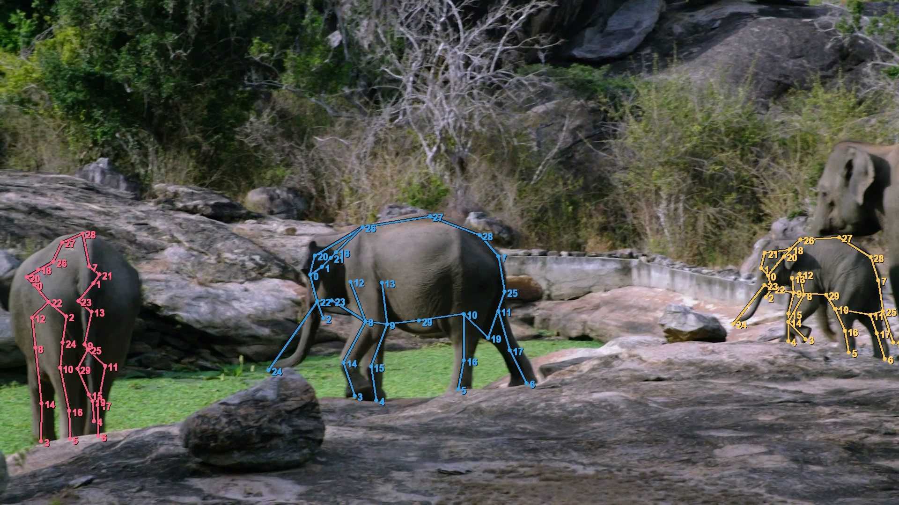

Cross-Species Interaction
409 cross-species images covering 94 unique species combinations. Animals with different body sizes, shapes, and textures appear in the same scene, requiring robust instance association under heterogeneous morphology.
Scene-centric, real-world animal imagery with rich ecological complexity — multi-animal interactions, inter-species co-occurrence, age diversity, and rare species.
Animal pose understanding in the wild remains challenging due to large morphological variation, frequent occlusion, and complex social interactions. Existing benchmarks are often limited to particular species, sparse pose definitions, or isolated individuals. Animal World introduces a unified 30-keypoint taxonomy and large-scale annotations spanning 124 species in natural environments, enabling evaluation of pose estimation under socially complex, scene-centric conditions.
Browse annotated samples across 124 single-species categories, 94 cross-species combinations (shown with &), and internet subsets. Each view shows up to 9 random samples — use Shuffle to see more.
Loading gallery…
Click any image to view keypoints and bounding boxes. Click again or Close to dismiss.
From single animals to crowded social groups — intra-species herds, cross-species scenes, age-diverse groups, rare species, and complex social behaviors. Animal World shifts the focus from isolated animal pose localization to scene-centric social pose understanding.

409 cross-species images covering 94 unique species combinations. Animals with different body sizes, shapes, and textures appear in the same scene, requiring robust instance association under heterogeneous morphology.
1,918 age-diverse images including juveniles, adults, and mother–offspring pairs.
Enables evaluation of age-sensitive pose understanding beyond simple scale or depth changes.
Chasing, fighting, grooming, mating, parental care, group movement, and collective foraging — poses shaped by interaction rather than independent motion alone.
Animal World was collected from 400+ 1080p animal videos. Frames are sparsely sampled with a large temporal stride to reduce near-duplicates and increase diversity across poses, species, viewpoints, and social configurations. Each visible animal is annotated independently with a unified 30-keypoint taxonomy, together with instance-level segmentation masks and bounding boxes derived from SAM 3D.
A unified 30-keypoint anatomical taxonomy for quadrupeds and primates, indexed from 0 to 29.

| ID | Name | ID | Name |
|---|---|---|---|
| 0 | Left eye | 15 | Right forelimb wrist |
| 1 | Right eye | 16 | Left hind-limb ankle |
| 2 | Lower jaw | 17 | Right hind-limb ankle |
| 3 | Left forefoot | 18 | Neck midpoint |
| 4 | Right forefoot | 19 | Tail tip |
| 5 | Left hind foot | 20 | Left ear base |
| 6 | Right hind foot | 21 | Right ear base |
| 7 | Tail root | 22 | Left mouth corner |
| 8 | Left forelimb elbow | 23 | Right mouth corner |
| 9 | Right forelimb elbow | 24 | Nose tip |
| 10 | Left hind-limb knee | 25 | Tail midpoint |
| 11 | Right hind-limb knee | 26 | Anterior back |
| 12 | Left upper forelimb | 27 | Middle back |
| 13 | Right upper forelimb | 28 | Posterior back |
| 14 | Left forelimb wrist | 29 | Abdomen midpoint |
Representative pose-estimation backbones evaluated on Animal World reveal substantial challenges under cross-species variation, social interaction, and occlusion.
| Training Data | Single | Intra-species Group | Cross-species | Social | Full Eval | |||||
|---|---|---|---|---|---|---|---|---|---|---|
| AP | mAP | AP | mAP | AP | mAP | AP | mAP | AP | mAP | |
| Animal World w/o Social | 95.1 | 64.0 | 84.6 | 50.0 | 89.1 | 59.2 | 83.3 | 48.1 | 88.1 | 54.6 |
| Animal World Social-only | 93.1 | 54.5 | 93.2 | 57.7 | 89.7 | 65.1 | 93.2 | 59.5 | 92.9 | 57.3 |
| Animal World Full | 95.3 | 70.3 | 92.5 | 65.8 | 91.3 | 70.7 | 92.6 | 66.1 | 91.1 | 67.4 |
| Gain over w/o Social | +0.2 | +6.3 | +7.9 | +15.8 | +2.2 | +11.5 | +9.3 | +18.0 | +3.0 | +12.8 |
| Training Data | Juvenile-only | Family | Age-diverse | Full Eval | ||||
|---|---|---|---|---|---|---|---|---|
| AP | mAP | AP | mAP | AP | mAP | AP | mAP | |
| Animal World w/o Age | 91.9 | 53.5 | 90.9 | 50.8 | 91.1 | 51.4 | 93.3 | 58.0 |
| Animal World Age-only | 92.7 | 54.9 | 93.5 | 53.7 | 93.6 | 53.9 | 92.3 | 52.8 |
| Animal World Full | 98.0 | 64.8 | 94.1 | 66.8 | 94.3 | 65.9 | 91.1 | 67.4 |
| Gain over w/o Age | +6.1 | +11.3 | +3.2 | +16.0 | +3.2 | +14.5 | -2.2 | +9.4 |
| Keypoint Source | Juvenile-only | Family | ||||
|---|---|---|---|---|---|---|
| Reproj. Err. | Mask IoU | Failure | Reproj. Err. | Mask IoU | Failure | |
| Animal World w/o Age | 4.6 | 88.0 | 3.6% | 6.8 | 87.7 | 15.4% |
| Animal World Age-only | 5.1 | 88.0 | 1.2% | 6.9 | 87.7 | 15.7% |
| Animal World Full | 4.7 | 88.1 | 0.0% | 6.6 | 87.8 | 12.6% |
| Δ Full − w/o Age | +0.1 | +0.1 | -3.6 | -0.2 | +0.1 | -2.8 |
Animal World provides denser keypoints, broader multi-animal coverage, explicit cross-species co-occurrence, social behavior cases, and age-diverse scenes.
| Dataset | Images | Instances | Species | KPs | Intra | Mixed | Social | Rare | Age |
|---|---|---|---|---|---|---|---|---|---|
| Animal Pose | 4,666 | 6,117 | 5 | 20 | ✓ | ||||
| StanfordExtra | 20,580 | 12,000 | 1 | 20 | |||||
| AP-10K | 10,015 | 13,028 | 54 | 17 | ✓ | ✓ | |||
| Animal Kingdom | 33,099 | 33,099 | 850 | 20 | ✓ | ||||
| APT-36K | 36,000 | 53,006 | 30 | 17 | ✓ | ✓ | |||
| Animal3D | 3,400 | 3,400 | 40 | 26 | |||||
| Animal World (ours) | 10,036 | 19,129 | 124 | 30 | ✓ | ✓ | ✓ | ✓ | ✓ |
@inproceedings{animalworld2026,
title = {Animal World: A Cross-Species Dataset for Social Animal Pose Understanding},
author = {Hu, Xuyi and Lyu, Jin and Zhang, Shaojie and Ma, Ke and Wang, Houtianfu and Liu, Siwei and Liu, Jiuming and Zuffi, Silvia and Zhao, Jiachen and An, Liang and Goetz, Stefan},
year = {2026}
}